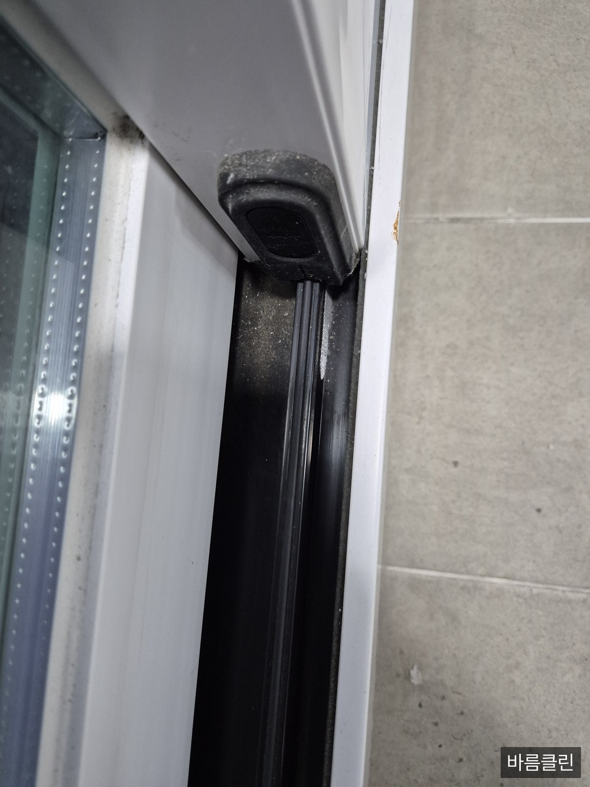
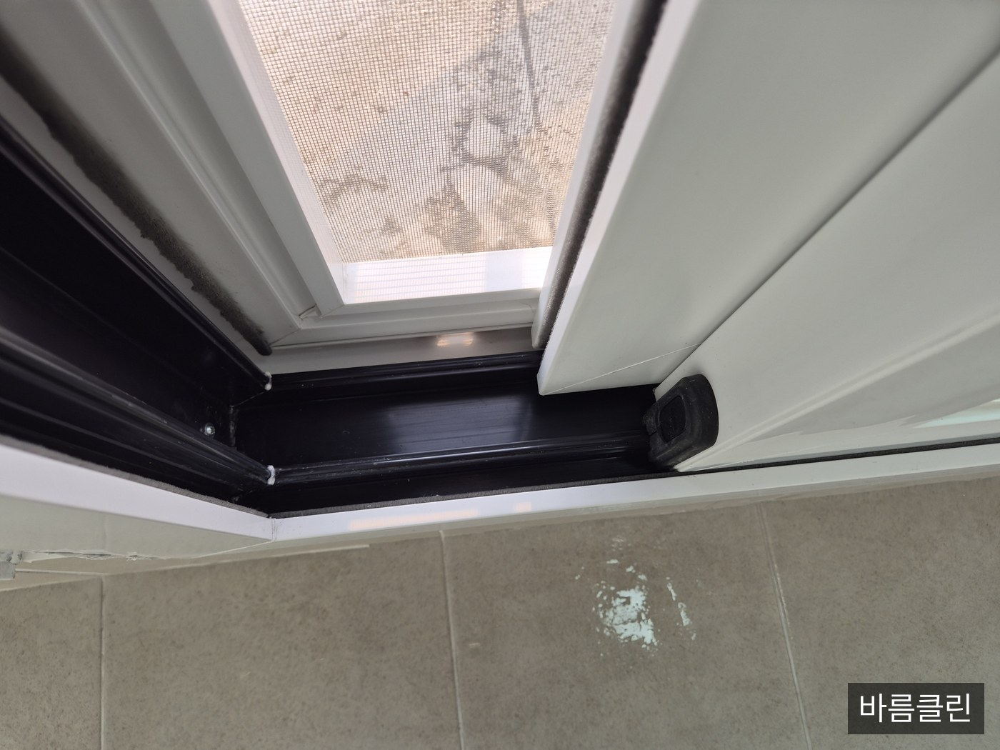

창틀 레일 청소법 — 묵은 먼지·곰팡이 파내기
① 핵심 요약
창틀은 "안 닦여서" 더러운 게 아니라 젖은 흙이 굳어서 안 닦이는 자리입니다. 대부분은 물부터 뿌려서 먼지를 진흙으로 만들어 버린 뒤 고생합니다. 여기서는 그 반대 순서로 갑니다.
직접 하기 어려우면 견적 문의 010-3427-5636
② 준비물·시작 전 확인
- 마른 도구 먼저: 안 쓰는 칫솔이나 좁은 틈새솔, 나무젓가락(끝에 키친타월을 감아 씁니다), 면봉
- 청소기 틈새 노즐 — 마른 먼지 단계에서만 사용합니다(젖은 오물은 흡입 금지)
- 중성세제(주방세제) 조금 푼 미온수, 마른 걸레 2장
- 곰팡이가 실제로 보일 때만: 차아염소산나트륨 계열 곰팡이 제거제. 단, 매끄럽고 단단한 방수성 표면 전용입니다(고무패킹·실리콘·타일 등). 벽지·석고보드·목재 창틀 같은 흡습성 표면에는 쓰지 않습니다.
- 고무장갑 + 마스크 + 창문 열기. 한국소비자원은 곰팡이 제거용 세정제 사용 시 장갑·마스크 착용과 사용 중·사용 후 환기를 권고합니다.
- 시작 전 라벨 확인: 지금 쓰려는 제품이 염소계인지 산성인지 확인하세요. 액성·주의사항·응급처치 요령은 쓰기 전에 읽는 게 맞습니다.
- 창틀 재질 확인: 알루미늄 새시, 도장된 면, 합성수지 부속에 염소계 원액이 닿으면 손상될 수 있습니다.
- 곰팡이 범위 확인: 검은 자국이 가로세로 90cm(약 10제곱피트)를 넘거나 벽지·벽면까지 번져 있으면 창틀 청소로 끝날 문제가 아닙니다(⑤ 참조).

③ 단계별 방법
- 창문을 열고 환기부터 (1~2분). 이 상태를 끝까지 유지합니다. 아직 아무것도 적시지 마세요.
- 마른 먼지 걷어내기 (창당 5~10분). 마른 솔로 레일 안쪽 → 바깥쪽으로 쓸어 모으고, 청소기 틈새 노즐로 빨아들입니다. 이 단계를 건너뛰고 물을 뿌리면 먼지가 반죽이 되어 두 배로 걸립니다.
- 레일 홈 파내기 (창당 10분). 나무젓가락 끝에 물티슈나 젖은 키친타월을 얇게 감아 홈 모양대로 쭉 밀어냅니다. 젓가락은 깎아서 폭을 맞출 수 있어 좁은 홈에 유리합니다. 타월이 새까매지면 바로 갈아 끼우세요 — 계속 쓰면 때를 다시 펴 바르는 셈입니다.
- 물빠짐 구멍(배수구) 뚫기 (3분). 새시 바깥쪽 아래에 있는 작은 구멍입니다. 여기가 막히면 비 오는 날 레일에 물이 고여 실내로 넘치고, 그 물이 곰팡이의 원인이 됩니다. 면봉·이쑤시개로 이물을 빼내고 물을 조금 부어 밖으로 빠지는지 확인하세요.
- 미온수+중성세제로 닦고 완전히 말리기 (10분). 미국 환경보호청(EPA)도 단단한 표면의 곰팡이·오염은 물과 세제로 닦은 뒤 완전히 건조하라고 안내합니다. 마른 걸레로 물기를 남김없이 걷어내는 것까지가 한 세트입니다.
- 검은 점이 남았을 때만 곰팡이 제거제 (15분~). 고무패킹·실리콘 같은 방수성 표면에만 분사하고, 접촉 시간은 제품 표기대로 둡니다. 참고로 한국소비자원 시험은 15분 접촉 조건에서 성능을 확인했습니다. 흘러내리는 세로면은 화장지를 덧대 밀착시키면 낫습니다. 시간이 지나면 깨끗한 물수건으로 충분히 닦아내고 환기를 이어갑니다.
- 마무리 건조. 레일과 패킹의 물기를 다 걷고 창을 열어둡니다. 젖은 상태로 닫아두면 그 자리에서 다시 시작됩니다.
④ 주의사항·흔한 실수
- ★염소계 제품과 산성 제품을 절대 섞지 마세요. 염소계(락스 성분) 곰팡이 제거제에 산성 욕실세정제·식초·구연산이 닿으면 인체에 치명적인 염소가스가 발생할 수 있습니다. 암모니아 함유 제품도 마찬가지입니다.
- "섞는다"에는 이어서 뿌리는 것도 포함됩니다. 락스 뿌린 자리에 곧바로 다른 세정제를 뿌리는 건 통에서 섞는 것과 다르지 않습니다. 하나를 완전히 헹궈낸 뒤에 다음으로 넘어가세요.
- 희석 비율은 인터넷 비율이 아니라 제품 표기를 따르세요. 질병관리청 소독 지침도 제조사가 제시한 희석배율·접촉시간·주의사항을 따르라고 못 박습니다. 참고로 환경부 환경보건포털은 곰팡이 제거 시 표백제를 물 3.8L당 1컵 이하로 안내하는데, 시판 스프레이형 곰팡이 제거제는 이미 희석·배합된 제품이므로 추가로 물이나 다른 세제를 타지 마세요.
- 락스 원액을 새시에 붓지 마세요. 염소의 산화력은 금속·합성수지·벽지·단백질 소재를 손상시킬 수 있습니다. 벽지에 튀면 탈색됩니다.
- 고무패킹 속까지 파고든 곰팡이는 표면 색만 빠집니다. 몇 번을 해도 같은 자리에 돌아오면 그건 세제 문제가 아니라 패킹 교체 영역입니다.
- ★창밖으로 몸을 내밀거나 창턱·난간에 올라서지 마세요. 외창 바깥면은 실내에서 손이 닿는 범위까지만 합니다. 고층 작업은 장비와 안전 조치가 있는 사람이 할 일입니다.
- 곰팡이가 반복되면 원인은 습기입니다. EPA는 실내 습도를 30~60%로 유지하고, 젖은 자재는 24~48시간 안에 청소·건조하며, 누수는 원인부터 수리하라고 안내합니다. 겨울에 창틀만 유독 젖는다면 결로 문제입니다.
- 일반 청소기로 젖은 오물을 빨아들이지 마세요. 고장의 지름길입니다.

⑤ 정리 한 줄
이럴 땐 전문가에게
- 곰팡이 자국이 가로세로 90cm(약 10제곱피트)를 넘거나 벽지·벽면·천장까지 번진 경우 — EPA도 이 규모까지는 대체로 직접 처리 가능하다고 보고, 그 이상은 전문 인력의 판단을 권합니다.
- 닦아도 몇 주 만에 같은 자리에 재발하는 경우 — 결로·단열·누수 등 구조 문제일 가능성이 큽니다.
- 외창 바깥면, 난간이 없거나 창이 통째로 고정된 고층 세대 — 몸을 내밀어야 하는 순간 그건 셀프 범위가 아닙니다.
- 청소 중이나 후에 기침·재채기·눈 따가움이 심해지거나 천식이 있는 경우 — 무리해서 마무리하지 말고 환기 후 중단하세요.
직접 하기 어렵다면 바름클린(원룸·외창·에어컨 전문 청소)에 맡기는 것도 방법입니다 — 문의 010-3427-5636.
본 글은 일반적인 정보 안내이며, 실제 작업 시에는 사용하는 제품의 표기 사용법과 안전수칙이 우선합니다. 창틀 재질(알루미늄·PVC·목재), 코킹 상태, 곰팡이 침투 정도에 따라 결과가 다를 수 있습니다. 발행일 2026년 8월 기준.
출처: 한국소비자원 곰팡이 제거용 욕실세정제 시험 결과 및 안전 주의사항(서울시 정리본) · 한국소비자원 의류용 표백제 비교 시험 — 염소계 혼합 시 염소가스 위해 · 유한크로락스(유한락스) 고객 Q&A — 락스와 곰팡이 제거제의 차이·소재 손상·산성 혼합 금지 · 유한크로락스 곰팡이 제거제 제품 정보 — 매끄럽고 단단한 방수성 표면 전용 · 질병관리청 소독 지침 — 제조사 제시 희석배율·접촉시간 준수, 장갑·마스크 착용, 사용 후 환기 · 환경부 환경보건포털 — 실내공기 곰팡이(발생 조건·예방·제거 시 주의) · 미국 환경보호청(EPA) 곰팡이에 대해 꼭 알아두어야 할 10가지 — 습도 30~60%, 24~48시간 내 건조 · EPA Mold Cleanup in Your Home — 약 10제곱피트 기준
견적 문의
시흥·광명·인천 등 수도권 출장으로 원룸·사무실 청소, 외창·에어컨 작업을 맡습니다. 현장 확인 후 견적을 드립니다.
010-3427-5636실무 매뉴얼
현장에서 쓰는 견적 계산법과 세제 12종 사용법을 정리한 실무 매뉴얼(76쪽)입니다. 견적 자동계산 엑셀과 고객 응대 스크립트를 함께 묶어 크몽에서 판매하고 있습니다.
크몽에서 보기